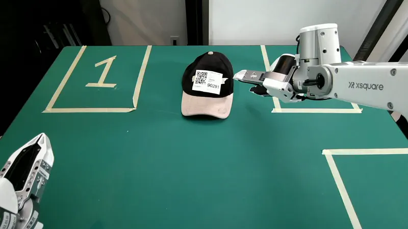
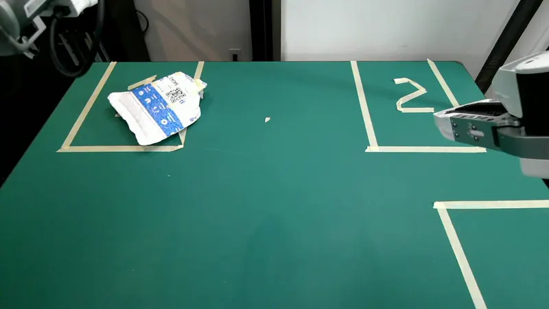
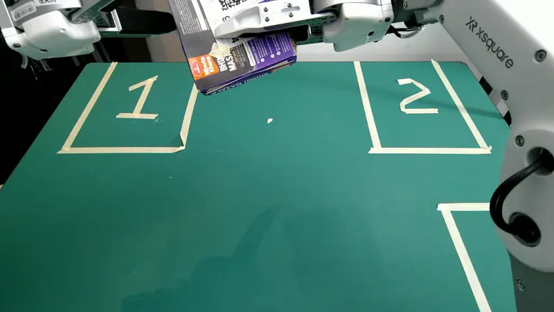
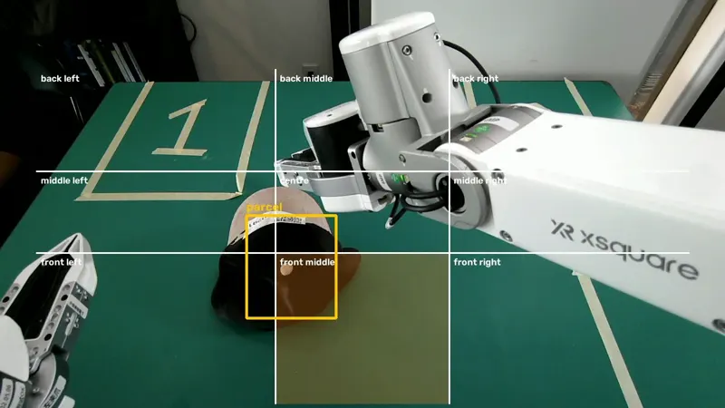
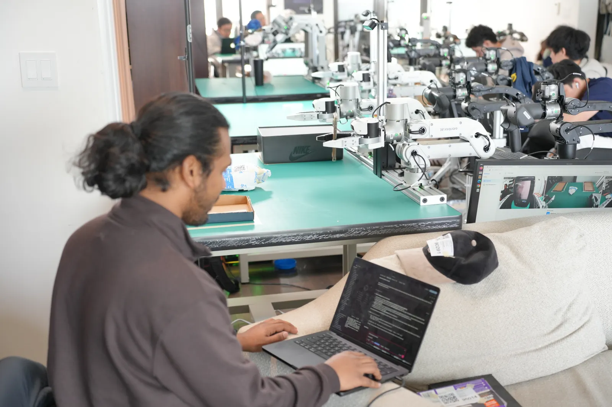
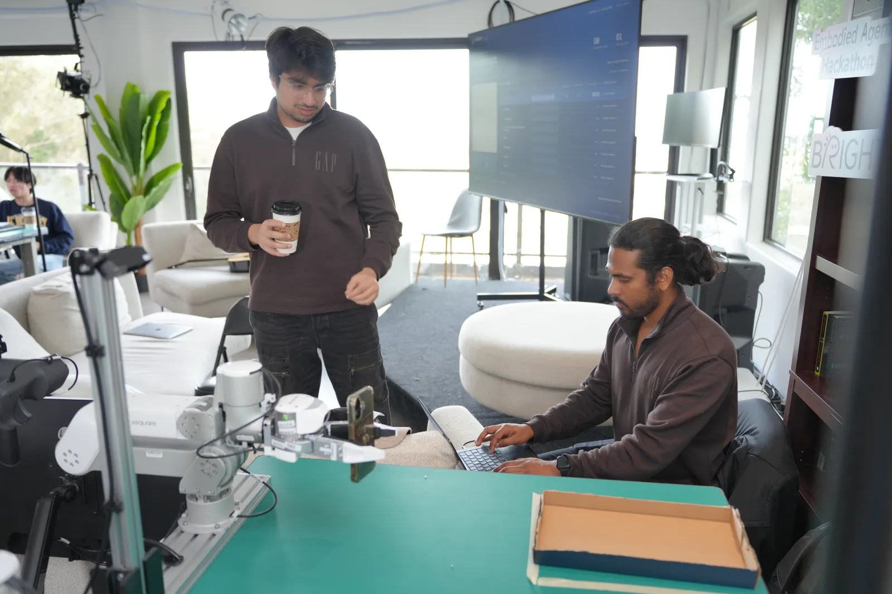

- 0 of 17simulated runs where the model alone lifted and placed the box
- 4 × 3/3event scenarios passed on the real dual-arm robot
- 163real-robot trials, 16,441 control cycles, every one logged
- 3 cyclesto re-target after a person moves the parcel
X Square's WALLX model turns one sentence into arm motion. It cannot read a shipping label, pick the right bin or tell whether it really grabbed the box: alone in our simulation twin it went 0 for 17. LabelLoop wraps the model in a loop. Perception reads the label and finds the parcel, a step machine routes it by rule and decides who moves, and every grasp and drop is checked on camera before the next step.
the loop, every control cycle
-
Sense
head + two wrist cameras, both arms' joints
-
Read
QR · pincode OCR · a phone in the claw
-
Route
ZIP prefix → bin, a lookup, never a guess
-
Act
harness exact moves: pick, flip, hand-over
WALLX one sentence: place it
-
Verify
grasp, drop, in the bin: checked on camera
↺ next control cycle
guards idle arm locked · grip latched while carrying · bins hidden from the model · one-button stop
how it works
- Perception. zxing QR and barcode decoding with an upscale retry, Tesseract OCR for small printed pincodes, and a phone held in the robot's own claw as a handheld scanner.
- Localization. Parcels segmented off the mat (never a bin or tray), a homography from head-camera pixels to a 3 × 3 table grid in metres, and a pixel-to-arm-pose fit from four recorded grasps.
- Control. A typed step machine: the harness runs exact motions (pick, flip, hand-over), WALLX gets one training-style sentence per call, and its history resets on every re-target.
- Verification. A grasp counts only when the claw closes and the parcel leaves its spot on camera; a drop counts only at the target with the claw open.
- Relay and evidence. One WebSocket + msgpack relay drives both the Isaac Sim / X2Real twin and the real robot. Every control cycle is logged with all three camera frames, and 240+ tests include a full offline run against a stub model.
on the real robot






Technical deep dive
Team project. I owned the relay, the harness and step machine, label reading and parcel finding, calibration, the safety guards and the real-robot trials. My teammate built the replay dashboard and its arm kinematics, the table-grid homography and the scenario 4 WALLX work. The code is in a private repository for now.
How it works
- The gap: X Square's WALLX vision-language-action model turns one sentence into arm motion, but it cannot read a shipping label, pick a bin or confirm it really grasped the box. We built a simulation twin of the robot first and swept prompt strategies against the model alone: 17 simulated episodes, none lifted and placed the box. Better wording was never going to close that gap, so the loop was built around the model.
- The relay: LabelLoop sits between the robot and the model. Every control cycle it takes three camera streams (head and two wrists) and both arms' joint states, runs perception, a step machine and a set of guards, and answers with an exact scripted motion, one short sentence for WALLX, or a hold. The same relay drives the Isaac Sim and X2Real twin and the real robot, so each behaviour was rehearsed before it touched hardware.
- Perception: a zxing QR and barcode decoder with an upscale retry, a Tesseract pincode reader for small dense labels, and a phone held in the robot's own claw as a handheld scanner that streams frames to the relay. A parcel finder segments objects off the mat (never a bin or tray, with touching parcels split), a label finder locates the label, and a table-grid homography turns head-camera pixels into a 3 by 3 grid in metres. A pixel-to-arm-pose map is fitted from four recorded grasps.
- Who moves: a step machine runs typed steps (replay a recorded motion, move, auto-pick, present the label, read, say a sentence, release, grip, hold the claw, wait for the parcel). The harness owns the exact motions: the pick, the flip, the in-air handover. WALLX owns open-ended placing, one sentence per call. The dashboard marks which of the two moved at every step, so the film never claims more of the model than it did.
- Routing and verification: the ZIP prefix picks the bin by lookup (950, 951, 940, 941 to the blue lane and the left arm; 900, 901, 902 to the red lane and the right arm; anything else, or no readable label, to the black reject bin). A pick counts only when the claw closes on something and the parcel leaves its spot on camera. A drop counts only at the target with the claw open, and the parcel is confirmed in the bin on camera before the run is called done.
- Live re-targeting: when a person moves the parcel, the harness sees it land in a new grid cell, cancels the old instruction, resets the model's history and re-targets within three control cycles. In the stress test, three moves produced three re-targets.
- The debugging story: early real-robot runs kept ending the same way. Whatever the placing sentence, WALLX reached for a bin instead of the parcel. The fix was to hide what it must not touch: bins are painted out of the head image until the drop, only the target bin comes back for the place step, and a watchdog holds all motion if a bin region changes. A wording that tells the arms to squeeze the short ends then lifted a wide box clean off the table for the first real pick.
- Guards and evidence: the idle arm is locked, the grip is latched while carrying, harness step names are never forwarded to the model, and one button stops and homes both arms. Every control cycle is logged with all three camera frames, the harness state and the exact sentence the model received. A replay dashboard animates the arms from the logs with inverse kinematics, and 269 tests keep the loop honest, including a full offline run against a stub model.
- Where it stopped: asking WALLX to set a held box down inside a taped zone worked in some runs and not others (one series: 1 inside, 1 on the edge, 1 out), and asking it to pick with no destination never committed to a lift. Those moves stay scripted in the demo, and the replay says so.
Design calls
- Hard rules, not prompts. Routing is a lookup on the ZIP prefix, never a model guess. No readable label, no bin: the parcel is flipped and rescanned, then rejected.
- One sentence at a time. The model gets a single short, training-style sentence per call, or a hold. History is reset on every re-target so stale intent never leaks into the next move.
- Hide what it must not touch. Bins are masked out of the head image until the drop. The model cannot grab what it cannot see, and a watchdog stops the run if a bin moves anyway.
- One relay for sim and real. The same harness drives the Isaac Sim twin and the real robot, so every behaviour was rehearsed in simulation first.
- Log everything, replay anything. Every cycle keeps all three camera frames, the harness state and the model's exact input. A failure is a replay, not a guess.
- Say what the model did. Harness motions and WALLX motions are labelled apart at every step, in the film and the dashboard.